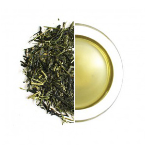
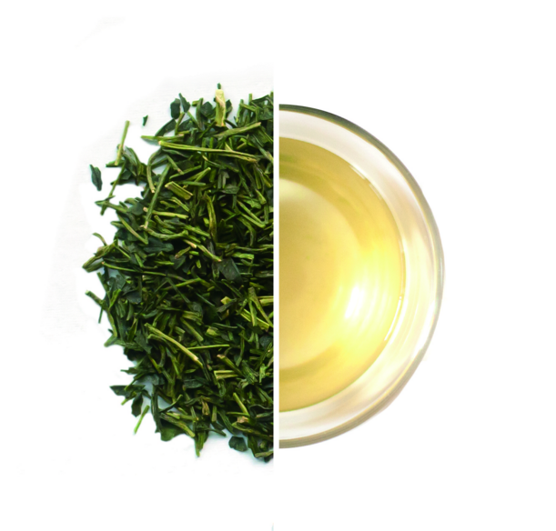
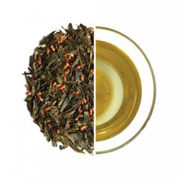

Our unlimited, complimentary teas aren’t an afterthought. We pay handsomely to serve you heirloom leaves – a superior product that has been overshaddowed by younger, less distinctive, higher-yielding varietals (heirlooms now comprise less than 3% of Japan’s annual harvest). Imported directly from our partner farm in Kyoto, theese leaves are untouched by chemicals, handpicked, and preserved in the traditional Japanese fashion. The result is incredibly nuanced, complex elixirs without a hint of bitterness.
Tea Nuitrition Facts Tea BenefitsSencha is often associated with a bitterness, but this particular blend’s considerate hand-picking and heirloom varietal eschews this pitfall. Less than 3% of sencha in Japan is still heirloom, farmer’s instead preferring the higher-yielding Yabukita plant genetics. Grown on southeast, rolling hills at an altitude of 1,640 feet, harvested in late May, this tea is imported directly from our partner farm.
Kukicha (茎茶), or twig tea, also known as bōcha (棒茶), is a Japanese blend made of stems, stalks, and twigs. Kukicha has a unique flavor and aroma among teas, due to its being composed of parts of the tea plant that are excluded from most other teas. Light in body with a smooth quality, Mejiro Kukicha is subtly sweet with a dried apricot nose / raw chestnut nose and a kiwi / papaya tongue fuzziness on the palate. Its color is a striking pale lime-yellow. Mejiro is the highest grade of Kukicha available and is made from the stems of spring-picked Tencha.
The especially delicious Genmaicha is a blend of Bancha green tea (harvested between Summer and Fall) and roasted Mochi rice. It plays nicely with the nutty flavors of the roasted rice and the more bitter notes of the Bancha tea. Genmaicha is regarded as the perfect comfort tea, and although economical to produce, its flavor is rich.
Call us at (415)787-9787 or email us at teacuppup.yup@tcpy.com
Stay Updated on new pup litters! Follow us on Instagram! Directions